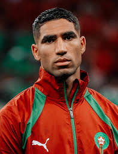
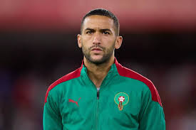
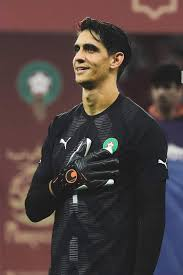
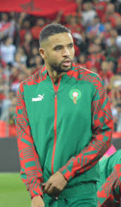

Demi-finaliste de la Coupe du Monde 2022
Une histoire qui a marqué l'histoire du football africain et mondial
Palmarès de l'équipe nationale
4e place
Coupe du Monde 2022 - Qatar
Champion
Coupe d'Afrique des Nations 1976
Finaliste
CAN 2004
Champion
CHAN 2018, 2020, 2024
Parcours historique - Coupe du Monde 2022
🇲🇦 0 - 0 🇭🇷
Croatie
🇧🇪 0 - 2 🇲🇦
Belgique
🇨🇦 1 - 2 🇲🇦
Canada
🇲🇦 0 - 0 🇪🇸
8e (4-3 tab)
🇵🇹 0 - 1 🇲🇦
Quart finale
🇫🇷 2 - 0 🇲🇦
Demi-finale
Légendes du football marocain

Achraf Hakimi
Latéral droit - PSG

Hakim Ziyech
Milieu offensif

Yassine Bounou
Gardien - Meilleur gardien CAN

Youssef En-Nesyri
Attaquant - Séville FC
Records et statistiques
| Catégorie | Record | Année |
|---|---|---|
| Meilleure performance Coupe du Monde | Demi-finaliste (4e place) | 2022 |
| Première nation africaine en demi-finale Coupe du Monde | Oui - Historique | 2022 |
| Victoire la plus large | 13 - 1 vs Arabie Saoudite | 1961 |
| Joueur le plus capé | Noureddine Naybet (115 sélections) | 1990-2006 |
| Meilleur buteur | Ahmed Faras (36 buts) | 1965-1979 |
| CHAN gagnés | 3 titres (2018, 2020, 2024) | Record africain |
🏆 Clubs marocains
Wydad Casablanca
3 Ligues des Champions CAF
Raja Casablanca
3 Ligues des Champions CAF
AS FAR
1 Ligue des Champions CAF
🇲🇦 Cliquez sur l'image pour visiter le site de la FRMF